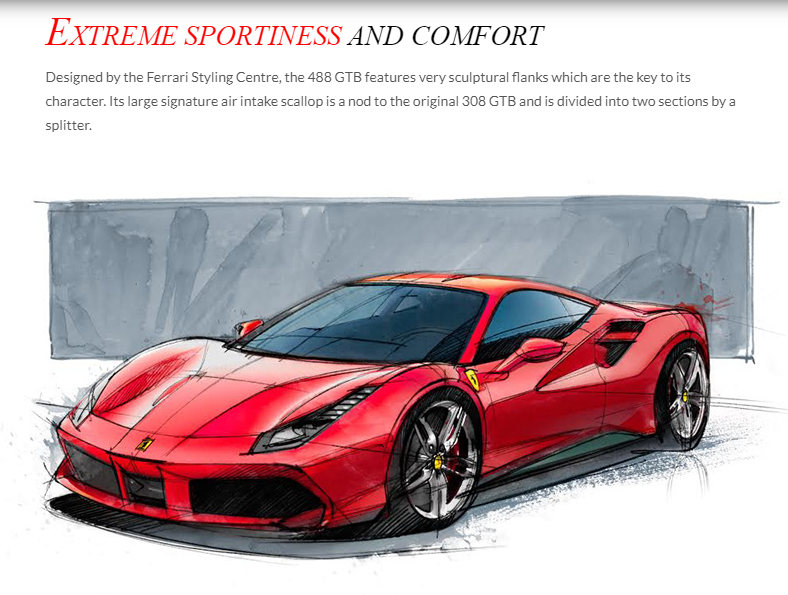
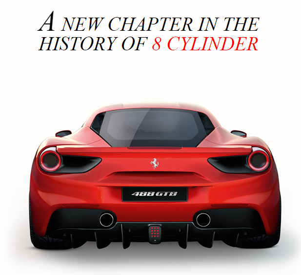
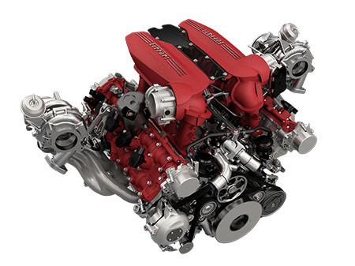

FORTY YEARS ON FROM THE UNVEILING OF FERRARI'S FIRST EVER MID-REAR-ENGINED V8 BERLINETTA, THE 308 GTB, THE PRANCING HORSE OPENS A NEW CHAPTER IN ITS 8-CYLINDER HISTORY.
The 488 GTB name marks a return to the classic Ferrari model designation with the 488 in its moniker indicating the engine's unitary displacement, while the GTB stands for Gran Turismo Berlinetta. The new car not only delivers unparalleled performance, it also makes that extreme power exploitable and controllable to an unprecedented level even by less expert drivers.

POWER (670 CV), ENGINE AND VEHICLE RESPONSE TIMES (0.8 S AND 0.06 S RESPECTIVELY) GIVE THE 488 GTB A UNIQUE CHARACTER AND GUARANTEE UNMATCHED DRIVING PLEASURE TO DRIVERS OF ALL ABILITIES.
To achieve this result, Ferrari drew on its experience in both F1 and GT racing, in which the 458 holds the WEC title and has won its category in two editions of the 24 Hours of Le Mans. The new model also exploits to the full the know-how gleaned by Ferrari engineers over the last decade through the XX programme which makes extreme track-only cars available to gentleman test-drivers

P O W E R T R A I N
Maximum torque is 718 Nm @ 7,000 rpm - a completely unprecedented achievement for a naturally-aspirated Ferrari production engine. A significant 80% of that maximum torque is available at just 3,500 rpm, improving both flexibility and pick-up at lower revs.
The shape of the power curve, which rises constantly all the way to the
maximum revs of 8,500 rpm, and the rapidity with which engine speed increases, thanks to low inertia, give occupants the feeling of boundless power and acceleration.

 4
4